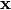
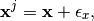
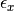
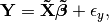
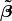
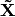
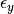
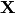
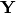
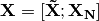

contrib Package¶
contrib Package¶
Provides various contributed functionality for KDVS.
counter Module¶
- class kdvs.contrib.counter.Counter(iterable=None, **kwds)¶
Bases: dict
Dict subclass for counting hashable objects. Sometimes called a bag or multiset. Elements are stored as dictionary keys and their counts are stored as dictionary values.
>>> Counter('zyzygy') Counter({'y': 3, 'z': 2, 'g': 1})
Create a new, empty Counter object. And if given, count elements from an input iterable. Or, initialize the count from another mapping of elements to their counts.
>>> c = Counter() # a new, empty counter >>> c = Counter('gallahad') # a new counter from an iterable >>> c = Counter({'a': 4, 'b': 2}) # a new counter from a mapping >>> c = Counter(a=4, b=2) # a new counter from keyword args
- most_common(n=None)¶
List the n most common elements and their counts from the most common to the least. If n is None, then list all element counts.
>>> Counter('abracadabra').most_common(3) [('a', 5), ('r', 2), ('b', 2)]
- elements()¶
Iterator over elements repeating each as many times as its count.
>>> c = Counter('ABCABC') >>> sorted(c.elements()) ['A', 'A', 'B', 'B', 'C', 'C']
If an element’s count has been set to zero or is a negative number, elements() will ignore it.
- classmethod fromkeys(iterable, v=None)¶
- update(iterable=None, **kwds)¶
Like dict.update() but add counts instead of replacing them.
Source can be an iterable, a dictionary, or another Counter instance.
>>> c = Counter('which') >>> c.update('witch') # add elements from another iterable >>> d = Counter('watch') >>> c.update(d) # add elements from another counter >>> c['h'] # four 'h' in which, witch, and watch 4
- copy()¶
Like dict.copy() but returns a Counter instance instead of a dict.
dataset_generation Module¶
Random supervised dataset generation with correlated variables.
The function returns a supervised training set with num_samples examples with num_variables variables.
Parameters : num_samples : int
Number of samples.
num_variables : int
Number of variables.
groups : tuple of int
For each group of relevant variables indicates the group cardinality.
weights : array_like of sum(groups) float
True regression model.
variables_stdev : float, optional (default is 1.0)
Standard deviation of the zero-mean Gaussian distribution generating variables column vectors.
correlations_stdev : float, optional (default is 1e-2)
Standard deviation of the zero-mean Gaussian distribution generating errors between variables which belong to the same group
labels_stdev : float, optional (default is 1e-2)
Standard deviation of the zero-mean Gaussian distribution generating regression errors.
Returns : X : (num_samples, num_variables) ndarray
Data matrix.
Y : (num_samples, 1) ndarray
Regression output.
Notes
The data will have len(groups) correlated groups of variables, where for each one the function generates a column vector  of num_samples values drawn from a zero-mean Gaussian distribution with standard deviation equal to variables_stdev.
For each variable of the group associated with the vector, the function generates the values as

where  is additive noise drawn from a zero-mean Gaussian distribution with standard deviation equal to correlations_stdev.
The regression values will be generated as

where  is the weights parameter, a list of sum(groups) coefficients of the relevant variables,  is the submatrix containing only the column related to the relevant variables and  is additive noise drawn from a zero-mean Gaussian distribution with standard deviation equal to labels_stdev.
At the end the function returns the matrices  and  where

is the concatenation of the matrix with the relevant variables with num_variables - sum(groups) noisy variables generated indipendently using values drawn from a zero-mean Gaussian distribution with standard deviation equal to variables_stdev.
Examples
>>> X, Y = correlated_dataset(30, 40, (5, 5, 5), [3.0]*15) >>> X.shape (30, 40) >>> Y.shape (30, 1)
- kdvs.contrib.dataset_generation.main()¶
Generates one or more randomized datasets with correlated variables. Use -h command line options for more details.
ordereddict Module¶
Copyright (c) 2009 Raymond Hettinger
Permission is hereby granted, free of charge, to any person
obtaining a copy of this software and associated documentation files
(the "Software"), to deal in the Software without restriction,
including without limitation the rights to use, copy, modify, merge,
publish, distribute, sublicense, and/or sell copies of the Software,
and to permit persons to whom the Software is furnished to do so,
subject to the following conditions:
The above copyright notice and this permission notice shall be
included in all copies or substantial portions of the Software.
THE SOFTWARE IS PROVIDED "AS IS", WITHOUT WARRANTY OF ANY KIND,
EXPRESS OR IMPLIED, INCLUDING BUT NOT LIMITED TO THE WARRANTIES
OF MERCHANTABILITY, FITNESS FOR A PARTICULAR PURPOSE AND
NONINFRINGEMENT. IN NO EVENT SHALL THE AUTHORS OR COPYRIGHT
HOLDERS BE LIABLE FOR ANY CLAIM, DAMAGES OR OTHER LIABILITY,
WHETHER IN AN ACTION OF CONTRACT, TORT OR OTHERWISE, ARISING
FROM, OUT OF OR IN CONNECTION WITH THE SOFTWARE OR THE USE OR
OTHER DEALINGS IN THE SOFTWARE.
Dictionary that remembers order of insertions. Introduced for compatibility with Python 2.6.
- class kdvs.contrib.ordereddict.OrderedDict(*args, **kwds)¶
Bases: dict, UserDict.DictMixin
- clear()¶
- popitem(last=True)¶
- keys()¶
- setdefault(key, default=None)¶
- update(other=None, **kwargs)¶
- pop(key, *args)¶
- values()¶
- items()¶
- iterkeys()¶
- itervalues()¶
- iteritems()¶
- copy()¶
- classmethod fromkeys(iterable, value=None)¶